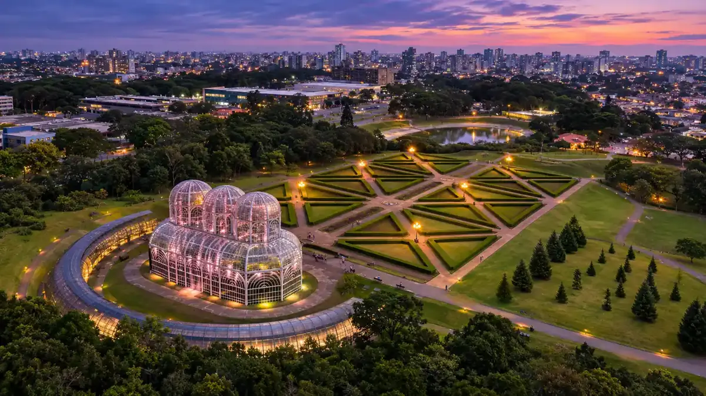

Encontro de empreendedores
Networking e troca de experiências entre negócios locais.

Empresas mais fortes • Curitiba mais conectada
Descubra empresas da comunidade, oportunidades de conexão e iniciativas de desenvolvimento local.
Associe sua empresaSite demonstrativo desenvolvido para a disciplina WDD 231. Empresas e eventos são exemplos fictícios.
Agenda ilustrativa da comunidade empresarial.
Networking e troca de experiências entre negócios locais.
Estratégias básicas para divulgar serviços na internet.
Uma conversa sobre parcerias e oportunidades em Curitiba.
Condições e previsão meteorológica da OpenWeatherMap.
Consultando previsão...
Dados: OpenWeatherMap.
Nossa comunidade
Conheça alguns associados ouro e prata selecionados aleatoriamente a cada acesso.
Carregando associados…